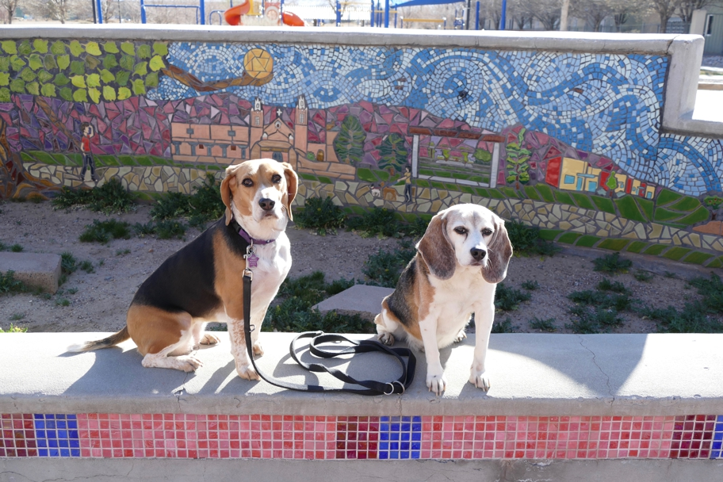

In the morning in Albuquerque I exercised the dogs in Sawmill Park near our hotel. This mosaic shows the church on the plaza in the nearby old town, a couple of dogs, a view of Sawmill Park which includes the mosaic, and some of the new homes around the park. There is also a Sawmill Market yuppie food court. I suppose the area was redeveloped after a sawmill was torn down. I took the dogs to this park because it has an off-leash area. A neighbor warned me about the goathead growing there. We didn't see any there, but did run into it a few times on our return through the Southwest: a little plant with tetrahedral, long-spined burrs like caltrops that are bad news for dog paws.
Albuquerque Halley Beagle New Mexico Wallace Beagle